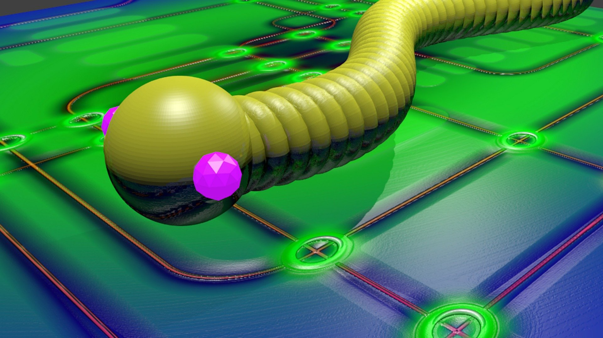

Noticias

el apocalipsis de Blaster NOTICIA
En 2003, este gusano lanzó muchos ataques DDoS contra los servidores de Microsoft.
leer más

El gusano Downadup, también conocido como Conficker.
La firma de seguridad F-Secure afirma que ya son casi nueve millones el número de máquinas infectadas en todo el mundo.
leer más